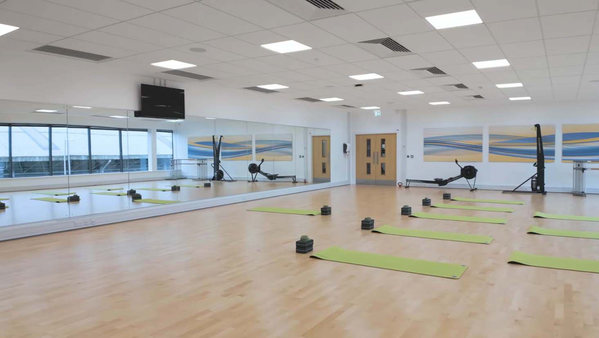
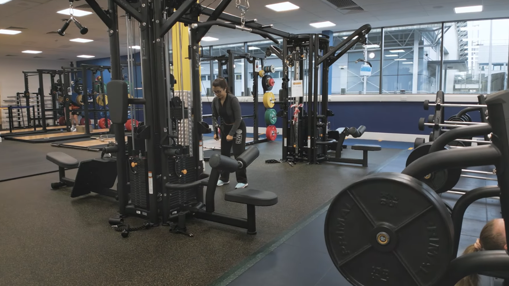

Our Story
Founded in 2012, UlsterActive began in a reclaimed industrial warehouse with nothing more than a single squat rack, a set of iron plates, and a relentless vision to redefine the training experience. What started as a local underground hub for elite athletes quickly evolved into a premier fitness destination for the entire community. Founded in 2012, UlsterActive began in a reclaimed industrial warehouse with nothing more than a single squat rack, a set of iron plates, and a relentless vision to redefine the training experience. What started as a local underground hub for elite athletes quickly evolved into a premier fitness destination for the entire community. We began with a simple mission: to create a space where fitness is not just a routine, but a lifestyle. Over the years, we've expanded our facilities, diversified our company offerings, and built a vibrant community of fitness enthusiasts who share our passion for health and wellness.


As we began to build our community, we realized that fitness is not just about physical health, but also about mental well-being and social connection.
That's why we've created a welcoming and inclusive environment where members can connect with like-minded individuals,
share their fitness journeys, and support each other in achieving their goals. Our community is at the heart of everything we do, and we strive to create a space where everyone feels valued and empowered.
Ever since, we've been committed to providing top-notch facilities, expert guidance, and a supportive environment to help our members achieve their fitness aspirations.
Whether you're looking to get in shape, improve your health, or simply have fun while working
out, UlsterActive is the place to be. We are proud of our journey and excited for the future as we continue to grow and evolve with our community.
Now, in 2026, UlsterActive stands as a beacon of fitness excellence in Belfast, with multiple locations, a wide range of classes and amenities, and a thriving community of members who embody our values of health, wellness, and camaraderie.
We are proud of our journey and excited for the future as we continue to grow and evolve
with our community. We will never forget our roots, and we remain dedicated to our founding mission of making fitness accessible, enjoyable, and empowering for everyone.
Whether you're a seasoned athlete or just starting your fitness journey, we invite you to join us
at UlsterActive and experience the difference for yourself. Welcome to the UlsterActive family - where your fitness journey begins and thrives.

Our Motto
At UlsterActive, our motto is to empower individuals to lead healthier, happier lives through fitness and community. We believe that fitness is not just about physical health, but also about mental well-being and social connection. Our mission is to create a welcoming and inclusive environment where members can connect with like-minded individuals, share their fitness journeys, and support each other in achieving their goals. We are committed to providing top-notch facilities, expert guidance, and a supportive environment to help our members achieve their fitness aspirations. Whether you're looking to get in shape, improve your health, or simply have fun while working out, UlsterActive is the place to be. We are proud of our journey and excited for the future as we continue to grow and evolve with our community.